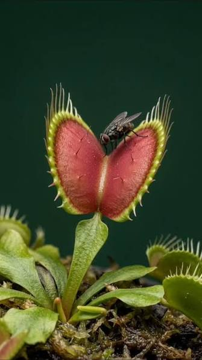

VENUS ATRAPAMOSCAS
Dionaea muscipula

Mimetiza el interior de una boca mediante néctar dulce y colores rojizos para atraer insectos a sus trampas de cierre rápido.
- Nombre científico: Dionaea muscipula
- Mimetismo: Imita el interior de una boca con néctar dulce y colores rojizos para atraer insectos a sus trampas.
- Hábitat: Pantanos y humedales de Carolina del Norte y Carolina del Sur.
- Sentidos: Visión y olor.
- Uso: Caza.
- Función: Alimentarse.